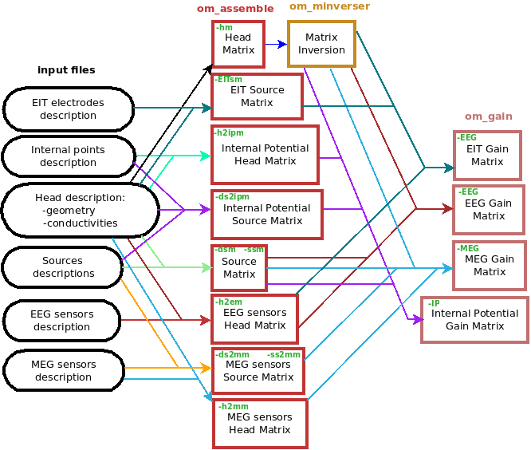
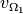
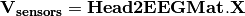
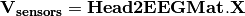
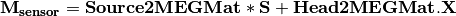

Tutorial¶
Table of Contents
Data format¶
OpenMEEG handles several file formats corresponding to different types of objects: vectors, matrices, head geometries, conductivities, meshes, dipoles, sensors.
Vectors and matrices¶
By default, matrices and vectors are stored on disk using a MATLAB file format.
Symmetric matrices which are not directly representable in the MATLAB format are represented as a MATLAB struct.
Other vector/matrices file formats are also supported.
Forcing a specific file format is achieved by specifying the proper file extension.
MATLAB extension is .mat.
Other useful file formats are ASCII (extension .txt) which generates human readable files, and BrainVisa texture file format (extension .tex).
OpenMEEG’s own binary file format (extension .bin) is available solely for backward compatibility and should be considered as deprecated (as it is subsumed by the MATLAB file format).
Geometrical model, mesh and conductivity files¶
OpenMEEG geometrical models are described through several files.
The toplevel file (generally ending with the extension .geom) assembles various interface descriptions to build Domains corresponding to head tissues.
Empty lines or lines beginning with # are non-significant.
The file must start with a special comment line which allows its identification (see example in fig.geom). Geometrical models globally contain 2 sections, one for describing the interfaces and one for describing the domains. In OpenMEEG, we make the following distinction between Mesh and Interface, which is helpful for defining non nested geometries.
- “Mesh”: a collection of vertices and triangles all connected.
- “Interface”: a closed mesh.
Sample non-nested geometry description:

Sample nested geometry descriptions:


The section starting with the keyword MeshFile is optional, as well as the section Meshes.
If
MeshFileis found, it specifies the path to the VTK/vtp file containing the vertices and annoted triangles of your geometry. (Triangle annotations are labels that specify the mesh names).If
Meshesis found, it specifies the paths to the meshes that may or may not be named. Mesh file formats supported aretri,bnd,mesh,off,gii, andvtk(in case you use VTK).- A Mesh is defined with the keyword
Meshfollowed by an optional name and “:”. - If no name is provided, the Mesh is named by its index (starting from 1).
- If none of the two sections
MeshFileandMeshesare present, the next section calledInterfacesis expected to contain the filenames of the meshes.
- A Mesh is defined with the keyword
Interfacessection specifies the mesh descriptions of the interfaces between tissues.- It is introduced by the keyword
Interfacesfollowed by the number of such interfaces. - An Interface is defined with the keyword
Interfacefollowed by a name and “:”. - If no name is provided, the Interface is named by its index (starting from 1).
- If the sections
MeshFileandMesheswere NOT specified before, a path to a mesh file is expected. - In the opposite case, a sequence of mesh names is expected.
- These meshes are concatenated to form a closed Interface.
- ‘+’ or ‘-‘ sign preceeding a mesh name reorients the meshes in order to form a consistently oriented interface.
- It is introduced by the keyword
Domainssection describes the head tissues and is introduced by the keywordDomainsfollowed by the number of such domains.- Each domain is then described, one domain per line, by the keyword
Domainfollowed by the domain name (which serves for identification and also appears in the conductivity description) followed by a list of IDs (names or integers). - These IDs are the interface names (as depicted in previous paragraph).
- They must be preceeded by a ‘+’ or ‘-‘ sign to indicate whether the domain is outside or inside the corresponding interface (as defined by the outward normal of the interface).
- Each domain is then described, one domain per line, by the keyword
See fig.geom for a detailed example.
Meshes¶
Meshes are a central element of Boundary Element Methods. They are used to represent the interfaces between regions of homogeneous conductivity. For instance, in a simple three-layer head model, three meshes would be used to represent:
- the inner skull surface
- the outer skull surface
- the outer scalp surface
The recommended mesh size is approximately 600 to 800 points per surface. Example with three surfaces: outer scalp (gray), outer skull (blue) and inner skull (pink).


Note
Meshes paths can be absolute (as depicted on fig.geom) or relative to where the command line is executed. For the meshes, the following formats are allowed:
- *.bnd~: bnd mesh format.
- *.off~: off mesh format.
- *.tri~: TRI format corresponding to early BrainVisa. Also handled by Anatomist.
- *.mesh~: MESH format corresponding to BrainVisa versions 3.0.2 and later. Also handled by Anatomist.
- *.vtk~: VTK mesh format.
- *.gii~: Gifti mesh format.
Files ending with the .tri extension follow the BrainVisa file format for meshes. Such files contain two sections,
each section introduced by the character - at the beginning of the line followed by a space followed by either one number (first section) or three times
the same number (second section).
The first sectioncontains a list of vertices with associated normals. The number on the line introducing the section is the number of points. Each following line corresponds to a single point. Its coordinates are the three first numbers appearing on the line. The normal corresponds to the following three numbers. Each point is assigned an index (starting at 0) corresponding to its order of appearance in the list.The second sectioncontains the triangles of the mesh. The number (repeated three times) in the section delimiter corresponds to the number of triangles. Each triangle is depicted by a sequence of three integers corresponding to the indices of the points assigned as described in the previous paragraph.
The following small example describes a very simple mesh containing 4 points and 4 triangles:
- 4
0 0 0 -0.5773 -0.5773 -0.5773
1 0 0 1 0 0
0 1 0 0 1 0
0 0 1 0 0 1
- 4 4 4
0 1 2
0 1 3
0 2 3
1 2 3
Geometry tools¶
Interfaces are required to be closed in order for the Boundary Element Method to function correctly. This is also necessary for the source meshes when computing forward solutions using surfacic source models (see below). Moreover, the interface meshes must not intersect each other. Non-intersection can be checked with the command om_check_geom. The command om_mesh_info applied to a mesh provides its number of points, of triangles, minimum and maximum triangle area, and also its Euler characteristic. The Euler characteristic of a closed mesh of genus 0 (homotopic to a sphere) is equal to 2. The Euler characteristic gives an indication if a mesh is likely to be closed or not.
In order to generate a VTK/vtp file, one can use the tool provided om_meshes_to_vtp, which from a list of (closed or not) meshes and names, removes duplicated vertices and creates an easily viewable file in VTK/Paraview.
In order to check a geometry file, one can use the tool provided om_check_geom, which display the read informations.
A conductivity file (generally ending with the extension .cond) is a simple ASCII file that contains associations between tissue names and conductivity values.
Associations are provided one per line. Empty lines or lines beginning with # are non-significant. The file must start with a special comment line which allows its identification.
The next figure provides an example conductivity file corresponding to the geometry file presented above.

Note that the tissue names are the ones appearing in the Domains descriptions of the Geometry description file (case sensitive).
Source descriptions¶
Sources are defined by their geometry (position and orientation) and their magnitude. OpenMEEG handles two types of source models: isolated dipoles, or distributed dipoles: these two models differ in their geometry description.
Isolated dipoles¶
Isolated dipoles are represented by a text file (extension *.dip or *.txt), in which each line defines a dipole position and orientation, encoded in 6 real values:
- three values encoding the Cartesian coordinate for the position,
- three values encoding the orientation of the dipole (supposed unitary).
The following example shows a file describing 5 isolated dipoles:

Note
The referential of the coordinates should be the same as for the meshes (the MR coordinates in general).
Distributed dipoles¶
Distributed dipoles are supported on a mesh, whose format must be *.mesh, or *.tri, or *.vtk.
Source activation¶
Source activation files are text files, in which each line corresponds to a source, and each column to a time sample.
- for isolated dipoles, the nth line corresponds to the amplitude of the nth dipole (with its fixed orientation)
- for distributed dipoles, the nth line correspond to the amplitude of the nth vertex in the source mesh.
Example for isolated dipoles:

For distributed sources, a source mesh describes their support. This is a detailed mesh generally covering the whole cortex. The mesh size should not exceed 35 000 points. The source amplitude is represented as continuous, and linear on each of the mesh triangles. The source orientation is modeled as piecewise constant, normal to each of the mesh triangles.

Isolated sources are the superposition of current dipoles, each of which is defined by its position and its moment.
Sensors¶
For EEG, the sensors are defined by the list of the x-y-z coordinates of the electrode positions. The electrodes are considered punctual and are called patches. The MEG sensor description is more complex: The MEG sensor definition is provided in a text file, in which each line provides the position of the sensor, and additional information such as its orientation or its name.
Sensors may have names (labels) in the first column of the file (it has to contains at least one character to be considered as label).
More precisely, omiting the first column which can contain a label there are 4 options for defining EEG, EIT or MEG sensors:
1 line per sensor and 3 columns (typically for EEG sensors or MEG sensors without orientation or EIT punctual patches):
- the 1st, 2nd and 3rd columns are respectively position coordinates x, y, z of sensor
1 line per sensor and 4 columns (spatially extended EIT sensors (circular patches) :
- the 1st, 2nd and 3rd columns are respectively position coordinates x, y, z of sensor
- the 4th column is the patche radius (unit relative to the mesh)
1 line per sensor and 6 columns (typically for MEG sensors) :
- the 1st, 2nd and 3rd are respectively position coordinates x, y, z of sensor
- the 4th, 5th and 6th are coordinates of vector orientation
1 line per integration point for each sensor and 8 columns (typically for MEG realistic sensors with coils, or gradiometers):
- the 1st column is sensors names
- the 2nd, 3rd and 4th are respectively position coordinates x, y, z of sensor
- the 5th, 6th and 7th are coordinates of vector orientation
- the 8th is the weight to apply for numerical integration (related to sensor name)
An example of MEG sensor description:

OpenMEEG from the command line¶
Diagram for the low level pipeline for computing leadfields (a.k.a., gain matrices) using OpenMEEG:
{kind=link}
This section reviews the main OpenMEEG command line tools. The general syntax and main options are detailed for each command.
Full details are available in OpenMEEG documentation. In this section, command names are in red, options are in green and output files are shown in blue.
om_assemble¶
General syntax:
om_assemble Option Parameters Matrix
This program assembles the different matrices to be used in later stages. It uses the head description (the geometrical model and the conductivities of the head see sec.geom, and sec.cond), the sources (see sec.sources) and the sensors (see sec.sensors) information. Option selects the type of matrix to assemble. Parameters depends on the specific option Option.
Note
Abbreviated option names can be used, such as -HM or -hm instead of -HeadMat.
We now detail the possible options (with their abbreviated versions given in parentheses), allowing to define various matrices to assemble.
A typical command is:
om_assemble -HeadMat subject.geom subject.cond HeadMat.mat
In the above example, the Parameters are the two file names: subject.geom subject.cond. More generally, the Parameters include two such file names describing geometry and conductivity, plus additional Input, describe below for each Option.
General options for om_assemble¶
–help (-h): summarizes all possible options.
Head modelling options for om_assemble: produce matrices (called head matrices) linked to the propagation of electrical signals in the head.
-HeadMat (-HM, -hm): om_assemble computes the matrix called Head Matrix (a.k.a structure matrix) for the Symmetric BEM, linked to the electrical conduction within the head. The output matrix is symmetric.
Note
The symmetric format only stores the lower half of a matrix.
Source modelling options for om_assemble: compute the source matrix for Symmetric BEM (right-hand side of the linear system). This matrix maps the representation of the sources to their associated electric potential in an infinite medium (). Different options exist for the 2 types of source models:
- -DipSourceMat (-DSM, -dsm): should be used when considering several isolated dipoles. This model is the most commonly used and should be used by default even if the dipoles correspond to the vertices of a cortical mesh. Input is a file containing the dipole descriptions. For faster computations, one can consider giving the name of the domain (containing all dipoles) as a string as an optional parameter in the end of the command line (see Example).
- -SurfSourceMat (-SSM, -ssm): should be used for continuous surfacic distributions of dipoles. Input is a file containing a mesh that describes the surface. For faster computations, one can consider giving the name of the domain (containing all dipoles) as a string as an optional parameter in the end of the command line.
- -EITSourceMat (-EITSM, -EITsm,): om_assemble computes the right-hand side vector for a given set of scalp electrodes where current injection is applied (which can be used for Electrical Impedance Tomography, EIT). For this option, Input is a file describing the electrode positions.
Sensor modelling options for om_assemble: compute matrices which are needed to integrate source and sensor information with computed potentials to provide the actual solution of the forward problem. The the following situations are handled: EEG, ECoG, sEEG, MEG.
- EEG:
- -Head2EEGMat (-H2EM, -h2em): om_assemble computes the linear interpolation matrix that maps OpenMEEG unknown
 to the potential on the scalp at EEG sensors: . Input is a file describing the EEG sensor positions. is stored as a sparse matrix.
to the potential on the scalp at EEG sensors: . Input is a file describing the EEG sensor positions. is stored as a sparse matrix.
- -Head2EEGMat (-H2EM, -h2em): om_assemble computes the linear interpolation matrix that maps OpenMEEG unknown
- ECoG:
- -Head2ECoGMat (-H2ECogM, -H2ECOGM, -h2ecogm): om_assemble computes the linear interpolation matrix that maps the OpenMEEG unknown to the potential on the scalp at EEG sensors:
 . Input contains two parameters: the file describing the ECoG sensor positions, and the name of the interface on which the ECoG electrodes should be mapped. is stored as a sparse matrix.
. Input contains two parameters: the file describing the ECoG sensor positions, and the name of the interface on which the ECoG electrodes should be mapped. is stored as a sparse matrix.
- -Head2ECoGMat (-H2ECogM, -H2ECOGM, -h2ecogm): om_assemble computes the linear interpolation matrix that maps the OpenMEEG unknown
- sEEG:
- -Head2InternalPotMat (-H2IPM, -h2ipm): om_assemble computes the matrix that allows the computation of potentials at internal positions from potentials and normal currents on head interfaces, as computed by the symmetric BEM.
- -DipSource2InternalPotMat (-DS2IPM, -ds2ipm): om_assemble computes the source contribution to the chosen internal points. It gives the potential due to isolated dipoles, as if the medium were infinite. For this option, Input takes the form: dipoles internalPoints where dipoles contains the dipole description and internalPoints is a file describing the points locations.
- MEG:
- -Head2MEGMat (-H2MM, -h2mm): om_assemble computes the contribution of Ohmic currents to the MEG sensors. Input is a file describing the SQUIDS geometries and characteristics.
- -SurfSource2MEGMat (-SS2MM, -ss2mm): om_assemble computes the source contribution to the MEG sensors using the same source model as the one used for the option -SurfSourceMat, i.e. surfacic distribution of dipoles. For this option, :input:`Input takes the form: mesh squids where mesh contains a mesh describing the source surface and squids is a file describing the SQUIDS geometries and characteristics.
- -DipSource2MEGMat (-DS2MM, -ds2mm): om_assemble computes the source contribution to the MEG sensors using the same source model as the one used for the option -DipSourceMat, i.e. isolated dipoles. For this option, Input takes the form: dipoles squids where dipoles contains the dipole description and squids is a file describing the SQUIDS geometries and characteristics.
om_minverser¶
General syntax:
om_minverser HeadMat HeadMatInv
This program is used to invert the symmetric matrix as provided by the command om_assemble with the option -HeadMat.
This command has only one option:
- –help (-h): summarizes the usage of om_minverser.
Note
The output matrix HeadMatInv is a symmetric matrix, like HeadMat.
om_gain¶
General syntax:
om_gain Option HeadMatInv Parameters SourceMat Head2EEGMat GainMatrix
This command computes the gain matrix by multiplying together matrices obtained previously (e.g. HeadMatInv is the matrix computed using om_minverser). The resulting gain matrix is stored in the file GainMatrix. Option selects the type of matrix to build. Parameters depend on the specific option Option.
General options:
- –help (-h): summarizes the usage of om_gain for all its possible options.
Gain matrix type options: select the type of gain matrix to be computed by om_gain.
- -EEG: allows to compute an EEG or an ECoG gain matrix. For EEG Parameters are then: HeadMatInv SourceMat Head2EEGMat. For ECoG Head2EEGMat should simply be replaced by Head2ECoGMat
- SourceMat is the matrix obtained using om_assemble with either of the options -SurfSourceMat or -DipSourceMat, depending on the source model.
- Head2EEGMat (resp. Head2ECoGMat) is the matrix obtained using om_assemble with the option -Head2EEGMat (resp. -Head2ECoGMat).
-EEG option is also used to compute an EIT gain matrix: in this case, SourceMat should contain the output of the -EITsource option of om_assemble. Multiplying the EIT gain matrix by the vector of applied currents at each EIT electrode yields the simulated potential on the EEG electrodes. The applied current on the EIT electrodes should sum to zero.
-MEG: allows to compute a MEG gain matrix. Parameters are then:
HeadMatInv SourceMat Head2MEGMat Source2MEGMat
SourceMat is the matrix obtained using om_assemble with either of the options -SurfSourceMat or -DipSourceMat, depending on the source model. Head2MEGMat is the matrix obtained using om_assemble with the option -HeadMEEGMat. Source2MEGMat is the matrix obtained using om_assemble with either of the options -SurfSource2MEGMat or -DipSource2MEGMat, depending on the source model.
Note
The magnetic field is related both to the sources and to the electric potential, according to: .
-InternalPotential: allows to compute an internal potential gain matrix for sensors within the volume. Parameters are then:
- HeadMatInv SourceMat Head2InternalPotMat Source2InternalPotMat
- Head2InternalPotMat and Source2InternalPotMat are respectively obtained using om_assemble with option -Head2InternalPotMat and -DipSource2InternalPotMat.
Examples¶
Assuming a head model represented by the geometry file head.geom and the conductivity file head.cond and EEG sensors detailed in a file head.eegsensors.
Computing the EEG gain matrix for sources distributed on a surface mesh represented by the file sources.tri is done via the following set of commands:
om_assemble -HM head.geom head.cond head.hm
om_assemble -SSM head.geom head.cond sources.tri head.ssm
om_assemble -h2em head.geom head.cond head.eegsensors head.h2em
om_minverser head.hm head.hm_inv
om_gain -EEG head.hm_inv head.ssm head.h2em head.gain
Considering now isolated dipolar sources detailed in the file sources.dip with MEG sensors depicted in the file head.squids. Using the same head model, the MEG gain matrix is obtained via the following set of commands:
om_assemble -HeadMat head.geom head.cond head.hm
om_assemble -DSM head.geom head.cond sources.dip head.dsm Brain
om_assemble -h2mm head.geom head.cond head.squids head.h2mm
om_assemble -ds2mm sources.dip head.squids head.ds2mm
om_minverser head.hm head.hm_inv
om_gain -MEG head.hm_inv head.dsm head.h2mm head.ds2mm head.gain